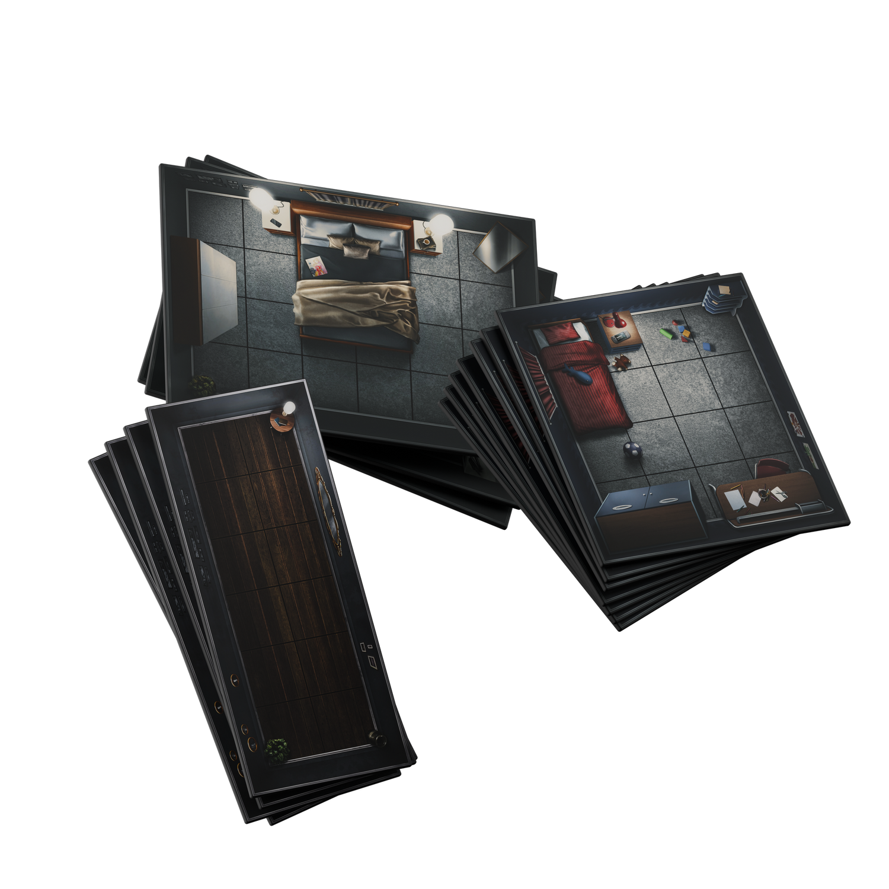
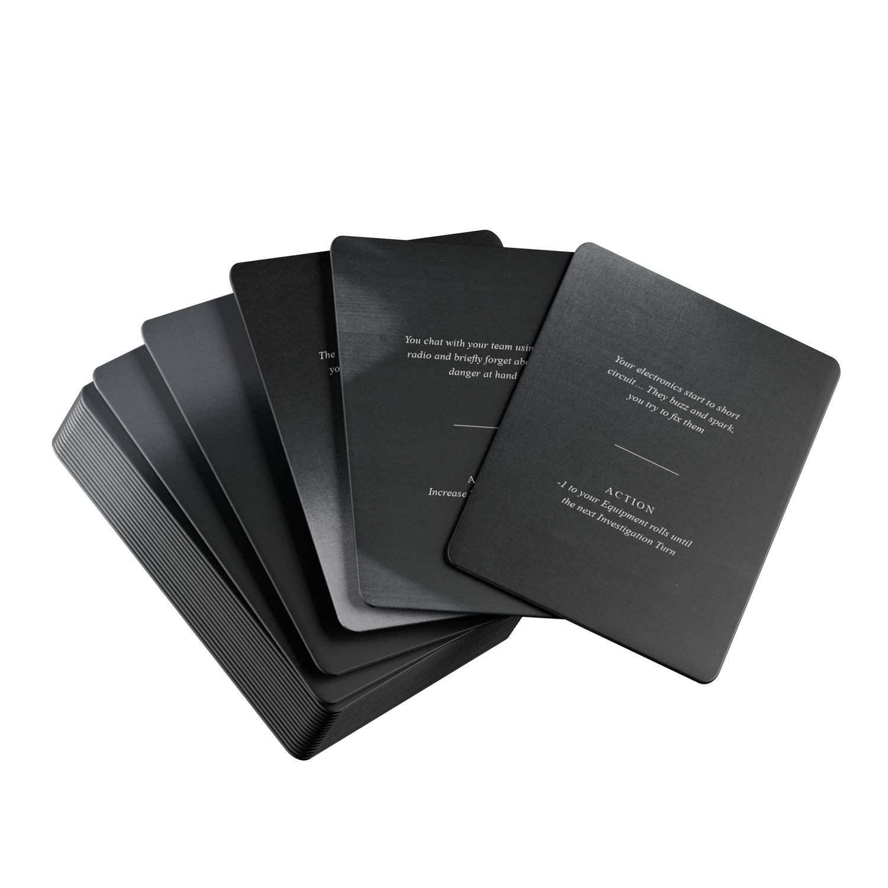
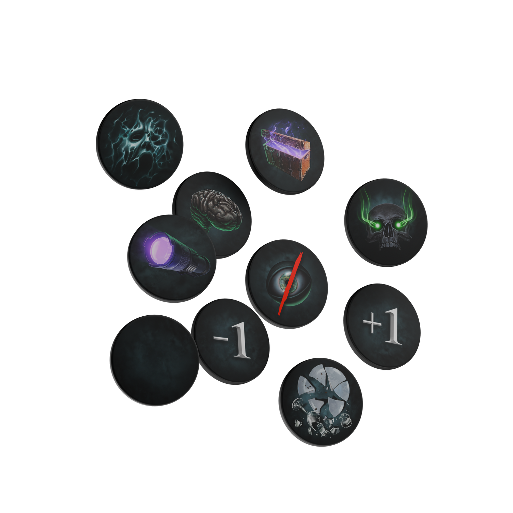

How to play
Build a haunted property complete with foreboding rooms, full of unpredictable, randomised items. Then, draw a Ghost Type card from the Investigation File. Each Ghost has its own powers, paired with an evidence pool randomised for each playthrough, offering a terrifying challenge for even the most seasoned ghost hunters. Using the Ghost Behavior board the ghost’s actions become unpredictable, driven by abilities presenting ever-changing challenges that take a psychological toll. The threat escalates as your sanity deteriorates, giving way to more aggressive and dangerous manifestations. So make sure you prepare before heading inside: equip your team with the best ghost hunting equipment found in your Van. Venture into the residence to uncover cursed possessions and ghostly phenomena before, at last, arriving at the Ghost Room. Can your team conquer its surroundings and gather paranormal evidence before escaping?House Assembly & Exploration
Using the instructional guide, construct the haunted property you wish to investigate. The provided layout and dimensions are merely a reference. Your team is encouraged to design its own unique or iconic floor plan to explore.
Place the house contents (tokens) face down within the rooms of the property.
Pick your investigators and vote for who will be your CI (Chief Investigator) for the mission. They will be in charge of displaying and controlling the Ghosts unpredictable behaviours, you can also play alone and control your own team if you dare.
As the players search the property for clues to the ghost’s location, they may uncover the following:
- Blank: The room is empty - move on to the next location.
- Cursed Possession: Draw a card from the Cursed Possession Deck. These items can be equipped or traded among players for use during the mission.
- Skeleton Key: A single-use item that allows players to unlock and access sealed rooms during their investigation.
- Hiding Spot: Once revealed, the token remains on the board. Rooms containing a Hiding Spot token serve as safe zones during a Hunt.
- Hallucination Card: Draw from the Hallucination Deck and immediately apply the listed effect.
- Disturbed Items: When discovered, replace this token with a Ghost Token to mark the Ghost Room. From this point onward, the Chief Investigator rolls during the Ghost’s turn and consults the Ghost Behaviour Board to determine the Ghost’s actions for each round of gameplay.
Sanity:
Just like in the original game, sanity plays a major role in influencing the behaviour of the paranormal entity haunting the location. As each round progresses, the team’s sanity gradually decreases - triggering more aggressive activity and making it increasingly difficult to gather evidence. The rate of this decline depends entirely on the team’s encounters and actions throughout the game. Darkness, Equipment, Hallucination Cards, and Cursed Possessions can alter this process, either accelerating or even temporarily restoring lost sanity.
Using Items & Identifying Evidence
Once the Ghost Room has been discovered, the ghost token is placed on the board. Using the round order cards to determine the sequence of play, investigators begin utilising the Ghost Hunting Equipment stored in the Van to uncover the Evidence tokens shown on the Ghost Type card. The evidence is randomised at the start of each game, ensuring that no two investigations feel the same and keeping each session fresh and unpredictable.
Players will engage with both the ghost and the environment inside the Ghost Room to uncover evidence. With the right equipment and a successful dice roll, the team can flip an Evidence token to determine if their investigation has yielded results. However, once the ghost has been discovered, it becomes an active participant in the round order. Guided by the Ghost Behaviour board, the entity will begin to interact with its surroundings, roam the map, and disrupt the investigators’ progress. Time is critical - as the team’s sanity continues to decline, the ghost’s behaviour grows increasingly unpredictable and aggressive, escalating the risk of a Hunt.
Escape the Hunt, Flea the House & Win!

Hunts can occur at any point during the game, triggered by the Ghost Behaviour board, Cursed Possessions, or Hallucination cards. When a Hunt begins, the Ghost standee materialises on the board and actively pursues the investigators, intent on eliminating them from play. Players can attempt to evade the Ghost by moving out of its range or hiding within a location that offers protection.
As the investigation progresses, Hunts grow longer and more frequent, with the Ghost relentlessly stalking and cornering players throughout the property. Any investigator caught by the apparition is removed from the game. However, with the right possession, fallen teammates can be revived and brought back into play; without it, they remain lost. Once the final piece of evidence has been collected, the team must escape both the Ghost and the property to successfully complete the mission.